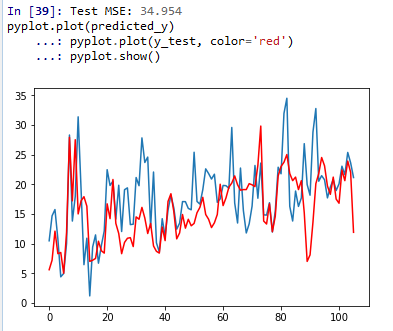

<!DOCTYPE html>
<html lang="zh">
<head><meta name="generator" content="Hexo 3.8.0">
    <meta charset="utf-8">
    
    <title>机器学习_时间序列预测分析算法 | FEI&#39;s Blog</title>
    
    
        <meta name="keywords" content="时间序列">
    
    <meta name="viewport" content="width=device-width, initial-scale=1, maximum-scale=1">
    <meta name="description" content="预测问题是机器学习中很重要的一个问题，它是根据过去已经存在的数据预测未来可能的情况。本文通过一个著名的波士顿抢劫案的数据集来说明预测问题的来龙去脉。">
<meta name="keywords" content="时间序列">
<meta property="og:type" content="article">
<meta property="og:title" content="机器学习_时间序列预测分析算法">
<meta property="og:url" content="http://ff120.github.io/hexoblog/2017/05/11/技术/机器学习/机器学习_时间序列预测分析算法/index.html">
<meta property="og:site_name" content="FEI&#39;s Blog">
<meta property="og:description" content="预测问题是机器学习中很重要的一个问题，它是根据过去已经存在的数据预测未来可能的情况。本文通过一个著名的波士顿抢劫案的数据集来说明预测问题的来龙去脉。">
<meta property="og:locale" content="zh-Hans">
<meta property="og:image" content="http://ff120.github.io/hexoblog/2017/05/11/技术/机器学习/机器学习_时间序列预测分析算法/2017-05-11_172946.png">
<meta property="og:image" content="http://ff120.github.io/hexoblog/2017/05/11/技术/机器学习/机器学习_时间序列预测分析算法/2017-05-11_191517.png">
<meta property="og:image" content="http://ff120.github.io/hexoblog/2017/05/11/技术/机器学习/机器学习_时间序列预测分析算法/2017-05-11_192035.png">
<meta property="og:image" content="http://ff120.github.io/hexoblog/2017/05/11/技术/机器学习/机器学习_时间序列预测分析算法/2017-05-11_193546.png">
<meta property="og:image" content="http://ff120.github.io/hexoblog/2017/05/11/技术/机器学习/机器学习_时间序列预测分析算法/2017-05-11_193854.png">
<meta property="og:updated_time" content="2019-03-28T00:54:58.174Z">
<meta name="twitter:card" content="summary">
<meta name="twitter:title" content="机器学习_时间序列预测分析算法">
<meta name="twitter:description" content="预测问题是机器学习中很重要的一个问题，它是根据过去已经存在的数据预测未来可能的情况。本文通过一个著名的波士顿抢劫案的数据集来说明预测问题的来龙去脉。">
<meta name="twitter:image" content="http://ff120.github.io/hexoblog/2017/05/11/技术/机器学习/机器学习_时间序列预测分析算法/2017-05-11_172946.png">
    

    
        <link rel="alternate" href="/atom.xml" title="FEI&#39;s Blog" type="application/atom+xml">
    

    
        <link rel="icon" href="/hexoblog/favicon.ico">
    

    <link rel="stylesheet" href="/hexoblog/libs/font-awesome/css/font-awesome.min.css">
    <link rel="stylesheet" href="/hexoblog/libs/open-sans/styles.css">
    <link rel="stylesheet" href="/hexoblog/libs/source-code-pro/styles.css">

    <link rel="stylesheet" href="/hexoblog/css/style.css">
    <script src="/hexoblog/libs/jquery/2.1.3/jquery.min.js"></script>
    <script src="/hexoblog/libs/jquery/plugins/cookie/1.4.1/jquery.cookie.js"></script>
    
    
        <link rel="stylesheet" href="/hexoblog/libs/lightgallery/css/lightgallery.min.css">
    
    
        <link rel="stylesheet" href="/hexoblog/libs/justified-gallery/justifiedGallery.min.css">
    
    
    
    


    
        <script async src="//busuanzi.ibruce.info/busuanzi/2.3/busuanzi.pure.mini.js"></script>
    
</head>
</html>
<body>
    <div id="container">
        <header id="header">
    <div id="header-main" class="header-inner">
        <div class="outer">
            <a href="/hexoblog/" id="logo">
                <i class="logo"></i>
                <span class="site-title">FEI&#39;s Blog</span>
            </a>
            <nav id="main-nav">
                
                    <a class="main-nav-link" href="/hexoblog/">首页</a>
                
                    <a class="main-nav-link" href="/hexoblog/archives">归档</a>
                
                    <a class="main-nav-link" href="/hexoblog/categories">分类</a>
                
                    <a class="main-nav-link" href="/hexoblog/tags">标签</a>
                
                    <a class="main-nav-link" href="/hexoblog/about">关于</a>
                
            </nav>
            
            <div id="search-form-wrap">

    <form class="search-form">
        <input type="text" class="ins-search-input search-form-input" placeholder="Rechercher">
        <button type="submit" class="search-form-submit"></button>
    </form>
    <div class="ins-search">
    <div class="ins-search-mask"></div>
    <div class="ins-search-container">
        <div class="ins-input-wrapper">
            <input type="text" class="ins-search-input" placeholder="Type something...">
            <span class="ins-close ins-selectable"><i class="fa fa-times-circle"></i></span>
        </div>
        <div class="ins-section-wrapper">
            <div class="ins-section-container"></div>
        </div>
    </div>
</div>
<script>
(function (window) {
    var INSIGHT_CONFIG = {
        TRANSLATION: {
            POSTS: 'Articles',
            PAGES: 'Pages',
            CATEGORIES: 'Catégories',
            TAGS: 'Tags',
            UNTITLED: '(Untitled)',
        },
        ROOT_URL: '/hexoblog/',
        CONTENT_URL: '/hexoblog/content.json',
    };
    window.INSIGHT_CONFIG = INSIGHT_CONFIG;
})(window);
</script>
<script src="/hexoblog/js/insight.js"></script>

</div>
        </div>
    </div>
    <div id="main-nav-mobile" class="header-sub header-inner">
        <table class="menu outer">
            <tr>
                
                    <td><a class="main-nav-link" href="/hexoblog/">首页</a></td>
                
                    <td><a class="main-nav-link" href="/hexoblog/archives">归档</a></td>
                
                    <td><a class="main-nav-link" href="/hexoblog/categories">分类</a></td>
                
                    <td><a class="main-nav-link" href="/hexoblog/tags">标签</a></td>
                
                    <td><a class="main-nav-link" href="/hexoblog/about">关于</a></td>
                
                <td>
                    
    <div class="search-form">
        <input type="text" class="ins-search-input search-form-input" placeholder="Rechercher">
    </div>

                </td>
            </tr>
        </table>
    </div>
</header>

        <div class="outer">
            
            
                <aside id="sidebar">
   
        
    <div class="widget-wrap" id="categories">
        <h3 class="widget-title">
            <span>Catégories</span>
            &nbsp;
            <a id="allExpand" href="#">
                <i class="fa fa-angle-double-down fa-2x"></i>
            </a>
        </h3>
        
        
        
         <ul class="unstyled" id="tree"> 
                    <li class="directory">
                        <a href="#" data-role="directory">
                            <i class="fa fa-folder"></i>
                            &nbsp;
                            心理学
                        </a>
                         <ul class="unstyled" id="tree"> 
                    <li class="directory">
                        <a href="#" data-role="directory">
                            <i class="fa fa-folder"></i>
                            &nbsp;
                            记忆魔法
                        </a>
                         <ul class="unstyled" id="tree">  <li class="file"><a href="/hexoblog/2019/04/03/心理学/记忆魔法/代码记忆法/">代码记忆法</a></li>  </ul> 
                    </li> 
                     </ul> 
                    </li> 
                    
                    <li class="directory open">
                        <a href="#" data-role="directory">
                            <i class="fa fa-folder-open"></i>
                            &nbsp;
                            技术
                        </a>
                         <ul class="unstyled" id="tree"> 
                    <li class="directory">
                        <a href="#" data-role="directory">
                            <i class="fa fa-folder"></i>
                            &nbsp;
                            Web开发
                        </a>
                         <ul class="unstyled" id="tree">  <li class="file"><a href="/hexoblog/2016/06/11/技术/Web开发/后台开发_How-to-install-Laravel-framework/">How to install Laravel framework</a></li>  <li class="file"><a href="/hexoblog/2016/06/11/技术/Web开发/后台开发_laravel-4-note-01/">laravel 4 note 01</a></li>  <li class="file"><a href="/hexoblog/2016/06/11/技术/Web开发/后台开发_Make-phpStorm-friendly-to-laravel/">Make phpStorm friendly to laravel</a></li>  <li class="file"><a href="/hexoblog/2016/06/11/技术/Web开发/后台开发_sublime-Text-tricks/">sublime Text tricks</a></li>  <li class="file"><a href="/hexoblog/2016/06/11/技术/Web开发/后台开发_think-php-note-01/">think php note 01</a></li>  <li class="file"><a href="/hexoblog/2016/06/11/技术/Web开发/后台开发_think-php-note-02/">think php note 02</a></li>  <li class="file"><a href="/hexoblog/2016/06/11/技术/Web开发/后台开发_think-php-note-03/">think php note 03</a></li>  <li class="file"><a href="/hexoblog/2016/06/11/技术/Web开发/后台开发_PHP编译less文件-lessphp的使用/">PHP编译less文件-lessphp的使用</a></li>  <li class="file"><a href="/hexoblog/2016/06/11/技术/Web开发/后台开发_Lavarel-后台组件frozenode的使用/">Lavarel 后台组件frozenode的使用</a></li>  <li class="file"><a href="/hexoblog/2016/06/11/技术/Web开发/后台开发_Linux常用命令/">Linux常用命令</a></li>  <li class="file"><a href="/hexoblog/2016/06/11/技术/Web开发/后台开发_Linux主机之间同步文件/">Linux主机之间同步文件</a></li>  <li class="file"><a href="/hexoblog/2016/06/11/技术/Web开发/后台开发_PHP基本操作/">PHP基本操作</a></li>  <li class="file"><a href="/hexoblog/2016/06/11/技术/Web开发/后台开发_短信验证码的实现/">短信验证码的实现</a></li>  <li class="file"><a href="/hexoblog/2016/06/11/技术/Web开发/后台开发_配置Apache支持使用HTTPS/">配置Apache支持使用HTTPS</a></li>  <li class="file"><a href="/hexoblog/2016/06/11/技术/Web开发/测试_使用Selenium测试UI/">测试_使用Selenium测试UI</a></li>  <li class="file"><a href="/hexoblog/2016/06/11/技术/Web开发/后台开发_PhpStorm常用快捷键/">PhpStorm常用快捷键</a></li>  <li class="file"><a href="/hexoblog/2016/06/11/技术/Web开发/微信开发_微信发送消息PHP-SDK/">微信发送消息PHP SDK</a></li>  <li class="file"><a href="/hexoblog/2016/06/11/技术/Web开发/微信开发_获取地理位置/">微信获取地理位置 </a></li>  <li class="file"><a href="/hexoblog/2016/06/11/技术/Web开发/微信开发_发送模板消息的代码/">微信发送模板消息的代码</a></li>  <li class="file"><a href="/hexoblog/2016/06/11/技术/Web开发/测试_Selenium-定位元素的几种方式/">测试_Selenium定位元素的几种方式</a></li>  <li class="file"><a href="/hexoblog/2016/06/11/技术/Web开发/测试_Selenium-Action/">测试_Selenium Action</a></li>  <li class="file"><a href="/hexoblog/2016/06/11/技术/Web开发/测试_Apache-JMeter的使用/">测试_Apache JMeter的使用</a></li>  <li class="file"><a href="/hexoblog/2016/06/12/技术/Web开发/后台开发_Apache-配置虚拟主机/">Apache 配置虚拟主机</a></li>  <li class="file"><a href="/hexoblog/2016/06/23/技术/Web开发/后台开发_改进PHP的var-dump-方法使之适应显示从数据库中查出来的数据/">改进PHP的var_dump()方法使之适应显示从数据库中查出来的数据</a></li>  <li class="file"><a href="/hexoblog/2016/06/23/技术/Web开发/后台开发_PHP读写XLS/">PHP读写XLS</a></li>  <li class="file"><a href="/hexoblog/2016/06/30/技术/Web开发/前端_jQuery-EasyUI-学习笔记/">JQuery EasyUI 学习笔记</a></li>  <li class="file"><a href="/hexoblog/2016/06/30/技术/Web开发/前端_bootsharp学习笔记/">Bootsharp学习笔记</a></li>  </ul> 
                    </li> 
                    
                    <li class="directory">
                        <a href="#" data-role="directory">
                            <i class="fa fa-folder"></i>
                            &nbsp;
                            专业术语
                        </a>
                         <ul class="unstyled" id="tree">  <li class="file"><a href="/hexoblog/2017/07/24/技术/专业术语/术语/">英语</a></li>  </ul> 
                    </li> 
                    
                    <li class="directory">
                        <a href="#" data-role="directory">
                            <i class="fa fa-folder"></i>
                            &nbsp;
                            大数据
                        </a>
                         <ul class="unstyled" id="tree">  <li class="file"><a href="/hexoblog/2016/06/23/技术/大数据/大数据_Spark环境下的Kmeans-Python实现/">Spark环境下的Kmeans-Python实现</a></li>  <li class="file"><a href="/hexoblog/2017/10/06/技术/大数据/大数据基础框架/">大数据基础框架</a></li>  </ul> 
                    </li> 
                    
                    <li class="directory">
                        <a href="#" data-role="directory">
                            <i class="fa fa-folder"></i>
                            &nbsp;
                            工具
                        </a>
                         <ul class="unstyled" id="tree"> 
                    <li class="directory">
                        <a href="#" data-role="directory">
                            <i class="fa fa-folder"></i>
                            &nbsp;
                            AutoHotKey
                        </a>
                         <ul class="unstyled" id="tree">  <li class="file"><a href="/hexoblog/2018/12/02/技术/工具/AutoHotKey/AutoHotKey非常有用的脚本/">AutoHotKey非常有用的脚本</a></li>  </ul> 
                    </li> 
                    
                    <li class="directory">
                        <a href="#" data-role="directory">
                            <i class="fa fa-folder"></i>
                            &nbsp;
                            Git
                        </a>
                         <ul class="unstyled" id="tree">  <li class="file"><a href="/hexoblog/2017/05/04/技术/工具/Git/GIT的使用01-基本功能/">GIT的使用01-基本功能</a></li>  <li class="file"><a href="/hexoblog/2018/07/29/技术/工具/Git/Git查询手册/">Git 手册</a></li>  </ul> 
                    </li> 
                    
                    <li class="directory">
                        <a href="#" data-role="directory">
                            <i class="fa fa-folder"></i>
                            &nbsp;
                            Hexo
                        </a>
                         <ul class="unstyled" id="tree">  <li class="file"><a href="/hexoblog/2016/06/12/技术/工具/Hexo/Hexo的使用02-同步/">Hexo的使用02-同步</a></li>  <li class="file"><a href="/hexoblog/2016/06/13/技术/工具/Hexo/Hexo的使用01-搭建/">Hexo的使用01-搭建</a></li>  <li class="file"><a href="/hexoblog/2017/04/12/技术/工具/Hexo/Hexo的使用05-Atom编辑器/">Hexo的使用05-Atom编辑器</a></li>  <li class="file"><a href="/hexoblog/2017/04/12/技术/工具/Hexo/Hexo的使用04-数学公式/">Hexo的使用04-数学公式</a></li>  <li class="file"><a href="/hexoblog/2017/05/05/技术/工具/Hexo/Hexo的使用03-迁移/">Hexo的使用03-迁移</a></li>  <li class="file"><a href="/hexoblog/2017/07/17/技术/工具/Hexo/Hexo的使用06-使用gist存储代码片段/">Hexo中使用gist存储代码片段</a></li>  </ul> 
                    </li> 
                    
                    <li class="directory">
                        <a href="#" data-role="directory">
                            <i class="fa fa-folder"></i>
                            &nbsp;
                            Visio
                        </a>
                         <ul class="unstyled" id="tree">  <li class="file"><a href="/hexoblog/2017/05/05/技术/工具/Visio/VISIO的使用01-基础入门/">VISIO的使用01-基础入门</a></li>  </ul> 
                    </li> 
                    
                    <li class="directory">
                        <a href="#" data-role="directory">
                            <i class="fa fa-folder"></i>
                            &nbsp;
                            图片处理
                        </a>
                         <ul class="unstyled" id="tree">  <li class="file"><a href="/hexoblog/2017/05/05/技术/工具/图片处理/图片处理02-一寸照片/">图片处理02-一寸照片</a></li>  <li class="file"><a href="/hexoblog/2017/05/17/技术/工具/图片处理/图片处理01-合并多张图片/">图片处理01-合并多张图片</a></li>  </ul> 
                    </li> 
                    
                    <li class="directory">
                        <a href="#" data-role="directory">
                            <i class="fa fa-folder"></i>
                            &nbsp;
                            正则表达式
                        </a>
                         <ul class="unstyled" id="tree">  <li class="file"><a href="/hexoblog/2018/07/29/技术/工具/正则表达式/正则表达式/">正则表达式</a></li>  </ul> 
                    </li> 
                    
                    <li class="directory">
                        <a href="#" data-role="directory">
                            <i class="fa fa-folder"></i>
                            &nbsp;
                            编程IDE
                        </a>
                         <ul class="unstyled" id="tree"> 
                    <li class="directory">
                        <a href="#" data-role="directory">
                            <i class="fa fa-folder"></i>
                            &nbsp;
                            Anaconda
                        </a>
                         <ul class="unstyled" id="tree">  <li class="file"><a href="/hexoblog/2017/04/18/技术/工具/编程IDE/Anaconda/Anaconda的使用01-基础/">Anaconda的使用01-基础</a></li>  </ul> 
                    </li> 
                    
                    <li class="directory">
                        <a href="#" data-role="directory">
                            <i class="fa fa-folder"></i>
                            &nbsp;
                            JetBrainsCLion
                        </a>
                         <ul class="unstyled" id="tree">  <li class="file"><a href="/hexoblog/2017/05/04/技术/工具/编程IDE/JetBrainsCLion/JetBrainsCLion的使用01-入门/">JetBrainsCLion的使用01-入门</a></li>  </ul> 
                    </li> 
                    
                    <li class="directory">
                        <a href="#" data-role="directory">
                            <i class="fa fa-folder"></i>
                            &nbsp;
                            VSCode
                        </a>
                         <ul class="unstyled" id="tree">  <li class="file"><a href="/hexoblog/2017/07/24/技术/工具/编程IDE/VSCode/Visual-Studio-Code使用技巧/">Visual Studio Code使用技巧</a></li>  </ul> 
                    </li> 
                     </ul> 
                    </li> 
                    
                    <li class="directory">
                        <a href="#" data-role="directory">
                            <i class="fa fa-folder"></i>
                            &nbsp;
                            网络软件
                        </a>
                         <ul class="unstyled" id="tree">  <li class="file"><a href="/hexoblog/2016/06/12/技术/工具/网络软件/Windows全局代理软件Proxifier/">Windows全局代理软件Proxifier</a></li>  <li class="file"><a href="/hexoblog/2016/06/12/技术/工具/网络软件/Windows手工修改路由表/">Windows手工修改路由表</a></li>  </ul> 
                    </li> 
                     </ul> 
                    </li> 
                    
                    <li class="directory">
                        <a href="#" data-role="directory">
                            <i class="fa fa-folder"></i>
                            &nbsp;
                            数据库
                        </a>
                         <ul class="unstyled" id="tree">  <li class="file"><a href="/hexoblog/2016/06/11/技术/数据库/数据库_Redis入门/">Redis入门</a></li>  <li class="file"><a href="/hexoblog/2016/06/12/技术/数据库/数据库_使用Database-Configuration-Assist-工具创建oracle数据库/">使用Database Configuration Assist 工具创建oracle数据库</a></li>  <li class="file"><a href="/hexoblog/2017/11/02/技术/数据库/SQL/">SQL</a></li>  </ul> 
                    </li> 
                    
                    <li class="directory">
                        <a href="#" data-role="directory">
                            <i class="fa fa-folder"></i>
                            &nbsp;
                            数据结构和算法
                        </a>
                         <ul class="unstyled" id="tree">  <li class="file"><a href="/hexoblog/2017/03/21/技术/数据结构和算法/算法专题_二维数组/">算法专题_二维数组</a></li>  <li class="file"><a href="/hexoblog/2017/03/21/技术/数据结构和算法/算法专题_矩阵和图/">矩阵和用矩阵表示的图的相关问题</a></li>  <li class="file"><a href="/hexoblog/2017/03/21/技术/数据结构和算法/算法专题_位运算/">算法专题_位运算</a></li>  <li class="file"><a href="/hexoblog/2017/03/23/技术/数据结构和算法/算法专题_链表/">算法专题_链表</a></li>  <li class="file"><a href="/hexoblog/2017/04/05/技术/数据结构和算法/算法专题_动态规划/">算法专题_动态规划</a></li>  <li class="file"><a href="/hexoblog/2017/04/06/技术/数据结构和算法/算法专题_图/">算法专题_图问题</a></li>  <li class="file"><a href="/hexoblog/2017/04/08/技术/数据结构和算法/做过的算法题汇总表/">做过的算法题汇总表</a></li>  <li class="file"><a href="/hexoblog/2017/04/09/技术/数据结构和算法/算法专题_二叉树/">算法专题_二叉树</a></li>  <li class="file"><a href="/hexoblog/2017/04/09/技术/数据结构和算法/算法专题_通用树结构/">算法专题_通用树结构</a></li>  <li class="file"><a href="/hexoblog/2017/04/10/技术/数据结构和算法/算法专题_大数据和空间限制/">算法专题_大数据和空间限制</a></li>  <li class="file"><a href="/hexoblog/2017/04/10/技术/数据结构和算法/算法专题_排列组合/">算法专题_排列组合</a></li>  <li class="file"><a href="/hexoblog/2017/04/11/技术/数据结构和算法/本地代码集锦/">本地代码集锦</a></li>  <li class="file"><a href="/hexoblog/2017/04/12/技术/数据结构和算法/算法专题_栈和队列/">算法专题_栈和队列</a></li>  <li class="file"><a href="/hexoblog/2017/04/16/技术/数据结构和算法/算法专题_排序算法/">算法专题_排序算法</a></li>  <li class="file"><a href="/hexoblog/2017/04/17/技术/数据结构和算法/算法专题_算法总结/">算法专题_算法总结</a></li>  <li class="file"><a href="/hexoblog/2017/05/02/技术/数据结构和算法/算法专题_一维数组/">算法专题_一维数组</a></li>  <li class="file"><a href="/hexoblog/2017/05/05/技术/数据结构和算法/算法专题_图之网络流/">算法专题_图之网络流</a></li>  <li class="file"><a href="/hexoblog/2017/05/06/技术/数据结构和算法/算法专题_图之最短路径/">算法专题_图之最短路径</a></li>  <li class="file"><a href="/hexoblog/2017/05/06/技术/数据结构和算法/算法专题_最小生成树/">算法专题_最小生成树</a></li>  <li class="file"><a href="/hexoblog/2017/05/06/技术/数据结构和算法/算法专题_霍夫曼编码/">算法专题_霍夫曼编码(哈夫曼编码)</a></li>  <li class="file"><a href="/hexoblog/2017/05/07/技术/数据结构和算法/Kickstart-Round-B-2017/">Kickstart Round B 2017</a></li>  <li class="file"><a href="/hexoblog/2017/05/08/技术/数据结构和算法/算法专题_模运算/">算法专题_模运算</a></li>  <li class="file"><a href="/hexoblog/2017/05/09/技术/数据结构和算法/算法专题_素数问题/">算法专题_素数问题</a></li>  <li class="file"><a href="/hexoblog/2017/05/11/技术/数据结构和算法/算法专题_计算几何/">算法专题_计算几何</a></li>  <li class="file"><a href="/hexoblog/2017/05/27/技术/数据结构和算法/计蒜之道2017程序设计大赛/">计蒜之道2017程序设计大赛</a></li>  <li class="file"><a href="/hexoblog/2017/05/28/技术/数据结构和算法/算法专题_字符串匹配/">算法专题_字符串匹配</a></li>  <li class="file"><a href="/hexoblog/2017/07/12/技术/数据结构和算法/四等分数组/">四等分数组</a></li>  <li class="file"><a href="/hexoblog/2017/07/12/技术/数据结构和算法/矩阵的遍历/">矩阵的遍历</a></li>  <li class="file"><a href="/hexoblog/2017/07/20/技术/数据结构和算法/N皇后问题/">N皇后问题</a></li>  <li class="file"><a href="/hexoblog/2017/07/23/技术/数据结构和算法/算法专题_线段树/">算法专题_线段树</a></li>  <li class="file"><a href="/hexoblog/2017/07/23/技术/数据结构和算法/算法专题_树状数组/">算法专题_树状数组</a></li>  <li class="file"><a href="/hexoblog/2017/07/23/技术/数据结构和算法/算法专题_并查集/">算法专题_并查集</a></li>  <li class="file"><a href="/hexoblog/2017/07/26/技术/数据结构和算法/算法专题_链表2/">算法专题_链表2</a></li>  <li class="file"><a href="/hexoblog/2017/08/06/技术/数据结构和算法/算法专题_二叉堆/">算法专题_二叉堆</a></li>  <li class="file"><a href="/hexoblog/2017/08/07/技术/数据结构和算法/算法专题_快速排序/">算法专题_快速排序</a></li>  <li class="file"><a href="/hexoblog/2017/08/07/技术/数据结构和算法/算法专题_归并排序/">算法专题_归并排序</a></li>  <li class="file"><a href="/hexoblog/2017/08/13/技术/数据结构和算法/算法专题-hihocoder/">算法专题_hihocoder</a></li>  <li class="file"><a href="/hexoblog/2017/08/17/技术/数据结构和算法/算法专题-贪心法/">算法专题_贪心法</a></li>  <li class="file"><a href="/hexoblog/2017/08/18/技术/数据结构和算法/阿里在线测评-兔子繁殖问题/">阿里笔试</a></li>  <li class="file"><a href="/hexoblog/2017/08/22/技术/数据结构和算法/今日头条-在线编程题/">今日头条_在线编程题</a></li>  <li class="file"><a href="/hexoblog/2017/08/23/技术/数据结构和算法/算法专题-字典树-Trie树/">算法专题_字典树(Trie树)</a></li>  <li class="file"><a href="/hexoblog/2017/09/23/技术/数据结构和算法/算法专题_二叉树2/">算法专题_二叉树2</a></li>  <li class="file"><a href="/hexoblog/2017/09/27/技术/数据结构和算法/手写代码-其他/">手写代码-其他</a></li>  <li class="file"><a href="/hexoblog/2017/10/03/技术/数据结构和算法/算法专题-常见题目/">算法专题_常见题目</a></li>  </ul> 
                    </li> 
                    
                    <li class="directory open">
                        <a href="#" data-role="directory">
                            <i class="fa fa-folder-open"></i>
                            &nbsp;
                            机器学习
                        </a>
                         <ul class="unstyled" id="tree"> 
                    <li class="directory">
                        <a href="#" data-role="directory">
                            <i class="fa fa-folder"></i>
                            &nbsp;
                            深度学习
                        </a>
                         <ul class="unstyled" id="tree">  <li class="file"><a href="/hexoblog/2017/03/22/技术/机器学习/深度学习/深度学习_Theano使用技巧/">深度学习_Theano使用技巧</a></li>  <li class="file"><a href="/hexoblog/2017/04/18/技术/机器学习/深度学习/深度学习_基本概念/">深度学习_基本概念</a></li>  <li class="file"><a href="/hexoblog/2017/04/18/技术/机器学习/深度学习/深度学习_利用神经网络识别手写数字/">深度学习__利用神经网络识别手写数字</a></li>  <li class="file"><a href="/hexoblog/2017/04/19/技术/机器学习/深度学习/深度学习_反向传播算法及简单实例/">深度学习_反向传播算法及简单实例</a></li>  <li class="file"><a href="/hexoblog/2017/04/19/技术/机器学习/深度学习/深度学习_Keras使用技巧/">深度学习_Keras使用技巧</a></li>  <li class="file"><a href="/hexoblog/2017/04/20/技术/机器学习/深度学习/深度学习_使用keras实现autoencoder/">深度学习_使用keras实现autoencoder</a></li>  <li class="file"><a href="/hexoblog/2017/04/20/技术/机器学习/深度学习/深度学习_卷积神经网络/">深度学习_卷积神经网络</a></li>  <li class="file"><a href="/hexoblog/2017/04/27/技术/机器学习/深度学习/深度学习_使用autoencoder自动提取特征/">深度学习_使用autoencoder自动提取特征</a></li>  <li class="file"><a href="/hexoblog/2017/05/10/技术/机器学习/深度学习/深度学习_递归神经网络(RNN)/">深度学习_递归神经网络(RNN)</a></li>  <li class="file"><a href="/hexoblog/2017/05/10/技术/机器学习/深度学习/深度学习_限制波尔茨曼向量机(RBM)/">深度学习_限制波尔茨曼向量机(RBM)</a></li>  <li class="file"><a href="/hexoblog/2017/05/12/技术/机器学习/深度学习/深度学习_TensorFlow使用技巧/">深度学习_TensorFlow使用技巧</a></li>  </ul> 
                    </li> 
                     <li class="file"><a href="/hexoblog/2016/06/16/技术/机器学习/机器学习_Scikit-Learn-ManyClassifier/">同时使用多个分类器(Scikit-Learn)</a></li>  <li class="file"><a href="/hexoblog/2016/06/16/技术/机器学习/机器学习_范数/">机器学习_范数</a></li>  <li class="file"><a href="/hexoblog/2016/06/20/技术/机器学习/机器学习_学习路线/">机器学习_学习路线</a></li>  <li class="file"><a href="/hexoblog/2016/06/20/技术/机器学习/机器学习_手写数字识别/">机器学习_手写数字识别</a></li>  <li class="file"><a href="/hexoblog/2016/07/11/技术/机器学习/机器学习_Matplolib使用技巧/">机器学习_Matplolib使用技巧</a></li>  <li class="file"><a href="/hexoblog/2017/03/22/技术/机器学习/机器学习_人脸识别/">机器学习_人脸识别</a></li>  <li class="file"><a href="/hexoblog/2017/05/04/技术/机器学习/机器学习_Matlab使用技巧/">机器学习_Matlab使用技巧</a></li>  <li class="file active"><a href="/hexoblog/2017/05/11/技术/机器学习/机器学习_时间序列预测分析算法/">机器学习_时间序列预测分析算法</a></li>  <li class="file"><a href="/hexoblog/2017/05/14/技术/机器学习/机器学习_Scikit-Learn使用技巧/">深度学习_Scikit-Learn机器学习算法的使用</a></li>  <li class="file"><a href="/hexoblog/2017/05/15/技术/机器学习/机器学习_时间序列预测の广告效果预测/">机器学习_时间序列预测の广告效果预测</a></li>  <li class="file"><a href="/hexoblog/2017/05/15/技术/机器学习/机器学习_算法汇总/">机器学习_算法汇总</a></li>  <li class="file"><a href="/hexoblog/2017/05/17/技术/机器学习/机器学习_Pandas使用技巧/">深度学习_Pandas使用技巧</a></li>  <li class="file"><a href="/hexoblog/2017/05/19/技术/机器学习/机器学习_感知机/">机器学习_感知机</a></li>  <li class="file"><a href="/hexoblog/2017/05/19/技术/机器学习/机器学习_逻辑回归/">机器学习_逻辑回归</a></li>  <li class="file"><a href="/hexoblog/2017/05/22/技术/机器学习/机器学习_损失函数/">机器学习_损失函数</a></li>  <li class="file"><a href="/hexoblog/2017/06/03/技术/机器学习/机器学习_分类器性能的度量/">机器学习_分类器性能的度量</a></li>  <li class="file"><a href="/hexoblog/2017/06/15/技术/机器学习/机器学习_Scipy使用技巧/">机器学习_Scipy使用技巧</a></li>  <li class="file"><a href="/hexoblog/2017/06/15/技术/机器学习/机器学习_Python使用技巧/">深度学习_Python使用技巧</a></li>  <li class="file"><a href="/hexoblog/2017/07/23/技术/机器学习/机器学习-Numpy使用技巧/">机器学习_Numpy使用技巧</a></li>  <li class="file"><a href="/hexoblog/2017/10/15/技术/机器学习/KNN-with-C/">KNN with C++</a></li>  <li class="file"><a href="/hexoblog/2017/11/04/技术/机器学习/机器学习-绪论-基本概念/">机器学习-绪论-基本概念</a></li>  <li class="file"><a href="/hexoblog/2017/11/04/技术/机器学习/机器学习-第一章-逻辑回归/">机器学习-第一章-逻辑回归</a></li>  <li class="file"><a href="/hexoblog/2017/11/04/技术/机器学习/机器学习-第二章-决策树/">机器学习-第二章-决策树</a></li>  <li class="file"><a href="/hexoblog/2017/11/04/技术/机器学习/机器学习-第三章-朴素贝叶斯/">机器学习-第三章-朴素贝叶斯</a></li>  <li class="file"><a href="/hexoblog/2017/11/04/技术/机器学习/机器学习-第四章-支持向量机/">机器学习-第四章-支持向量机</a></li>  <li class="file"><a href="/hexoblog/2017/11/04/技术/机器学习/机器学习-第五章-最近邻/">机器学习-第五章-最近邻</a></li>  <li class="file"><a href="/hexoblog/2017/11/04/技术/机器学习/机器学习-第六章-kmeans/">机器学习-第六章-kmeans</a></li>  <li class="file"><a href="/hexoblog/2017/11/04/技术/机器学习/机器学习-第七章-感知机/">机器学习-第七章-感知机</a></li>  </ul> 
                    </li> 
                    
                    <li class="directory">
                        <a href="#" data-role="directory">
                            <i class="fa fa-folder"></i>
                            &nbsp;
                            编程语言
                        </a>
                         <ul class="unstyled" id="tree"> 
                    <li class="directory">
                        <a href="#" data-role="directory">
                            <i class="fa fa-folder"></i>
                            &nbsp;
                            C++
                        </a>
                         <ul class="unstyled" id="tree">  <li class="file"><a href="/hexoblog/2017/04/07/技术/编程语言/C++/C++语言技巧/">C++语言技巧</a></li>  </ul> 
                    </li> 
                     </ul> 
                    </li> 
                    
                    <li class="directory">
                        <a href="#" data-role="directory">
                            <i class="fa fa-folder"></i>
                            &nbsp;
                            计算机基础
                        </a>
                         <ul class="unstyled" id="tree"> 
                    <li class="directory">
                        <a href="#" data-role="directory">
                            <i class="fa fa-folder"></i>
                            &nbsp;
                            计算机网络
                        </a>
                         <ul class="unstyled" id="tree">  <li class="file"><a href="/hexoblog/2016/06/12/技术/计算机基础/计算机网络/网络_校园网多终端上网方案/">校园网多终端上网方案</a></li>  <li class="file"><a href="/hexoblog/2017/07/12/技术/计算机基础/计算机网络/计算机网络/">计算机网络</a></li>  </ul> 
                    </li> 
                     </ul> 
                    </li> 
                    
                    <li class="directory">
                        <a href="#" data-role="directory">
                            <i class="fa fa-folder"></i>
                            &nbsp;
                            认知神经科学
                        </a>
                         <ul class="unstyled" id="tree">  <li class="file"><a href="/hexoblog/2016/06/12/技术/认知神经科学/文献检索方法/">文献检索方法</a></li>  <li class="file"><a href="/hexoblog/2016/06/12/技术/认知神经科学/参考文献书写格式/">参考文献书写格式</a></li>  <li class="file"><a href="/hexoblog/2016/06/12/技术/认知神经科学/使用Python处理fMRI数据/">使用Python处理fMRI数据</a></li>  <li class="file"><a href="/hexoblog/2016/06/22/技术/认知神经科学/中英文对照/">中英文对照</a></li>  <li class="file"><a href="/hexoblog/2017/01/03/技术/认知神经科学/circos入门教程/">circos入门教程</a></li>  <li class="file"><a href="/hexoblog/2017/03/08/技术/认知神经科学/基于视频的车牌识别和流量统计/">基于视频的车牌识别和流量统计</a></li>  <li class="file"><a href="/hexoblog/2017/03/08/技术/认知神经科学/基于贝叶斯网络和隐性知识的AU识别研究/">基于贝叶斯网络和隐性知识的AU识别研究</a></li>  <li class="file"><a href="/hexoblog/2017/03/09/技术/认知神经科学/基于连接的脑信息解码研究/">基于连接信息的脑信息解码研究</a></li>  <li class="file"><a href="/hexoblog/2017/03/09/技术/认知神经科学/认知神经科学系列目录/">认知神经科学系列目录</a></li>  <li class="file"><a href="/hexoblog/2017/03/20/技术/认知神经科学/多被试多RUN批量预处理(SPM)/">多被试多RUN批量预处理(SPM)</a></li>  <li class="file"><a href="/hexoblog/2017/03/20/技术/认知神经科学/SPM预处理中的常用操作/">SPM预处理中的常用操作</a></li>  <li class="file"><a href="/hexoblog/2017/03/20/技术/认知神经科学/动态因果模型(DCM)的批量定义和估计/">动态因果模型(DCM)的批量定义和估计</a></li>  <li class="file"><a href="/hexoblog/2017/04/13/技术/认知神经科学/使用SPM做Second-Level分析/">使用SPM做Second_Level分析</a></li>  <li class="file"><a href="/hexoblog/2017/04/13/技术/认知神经科学/DCM模型的定义和估计/">DCM模型的定义和估计</a></li>  <li class="file"><a href="/hexoblog/2017/04/14/技术/认知神经科学/XJVIEW的使用技巧/">XJVIEW的使用技巧</a></li>  <li class="file"><a href="/hexoblog/2017/04/14/技术/认知神经科学/SPM中函数的修改和使用/">SPM中函数的修改和使用</a></li>  <li class="file"><a href="/hexoblog/2017/05/02/技术/认知神经科学/fMRI中常用的工具包/">fMRI中常用的工具包</a></li>  <li class="file"><a href="/hexoblog/2017/05/11/技术/认知神经科学/使用3D卷积神经神经网络提取脑成像数据的特征/">使用3D卷积神经神经网络提取脑成像数据的特征</a></li>  <li class="file"><a href="/hexoblog/2017/05/14/技术/认知神经科学/fMRI相关的资源汇总/">fMRI相关的资源汇总</a></li>  <li class="file"><a href="/hexoblog/2017/05/30/技术/认知神经科学/fMRI相关问题汇总/">fMRI相关问题汇总</a></li>  </ul> 
                    </li> 
                     </ul> 
                    </li> 
                    
                    <li class="directory">
                        <a href="#" data-role="directory">
                            <i class="fa fa-folder"></i>
                            &nbsp;
                            收藏夹
                        </a>
                         <ul class="unstyled" id="tree">  <li class="file"><a href="/hexoblog/2017/03/22/收藏夹/博客集锦/">博客收藏</a></li>  </ul> 
                    </li> 
                     </ul> 
    </div>
    <script>
        $(document).ready(function() {
            var iconFolderOpenClass  = 'fa-folder-open';
            var iconFolderCloseClass = 'fa-folder';
            var iconAllExpandClass = 'fa-angle-double-down';
            var iconAllPackClass = 'fa-angle-double-up';
            // Handle directory-tree expansion:
            // 左键单独展开目录
            $(document).on('click', '#categories a[data-role="directory"]', function (event) {
                event.preventDefault();

                var icon = $(this).children('.fa');
                var expanded = icon.hasClass(iconFolderOpenClass);
                var subtree = $(this).siblings('ul');
                icon.removeClass(iconFolderOpenClass).removeClass(iconFolderCloseClass);
                if (expanded) {
                    if (typeof subtree != 'undefined') {
                        subtree.slideUp({ duration: 100 });
                    }
                    icon.addClass(iconFolderCloseClass);
                } else {
                    if (typeof subtree != 'undefined') {
                        subtree.slideDown({ duration: 100 });
                    }
                    icon.addClass(iconFolderOpenClass);
                }
            });
            // 右键展开下属所有目录
            $('#categories a[data-role="directory"]').bind("contextmenu", function(event){
                event.preventDefault();
                
                var icon = $(this).children('.fa');
                var expanded = icon.hasClass(iconFolderOpenClass);
                var listNode = $(this).siblings('ul');
                var subtrees = $.merge(listNode.find('li ul'), listNode);
                var icons = $.merge(listNode.find('.fa'), icon);
                icons.removeClass(iconFolderOpenClass).removeClass(iconFolderCloseClass);
                if(expanded) {
                    subtrees.slideUp({ duration: 100 });
                    icons.addClass(iconFolderCloseClass);
                } else {
                    subtrees.slideDown({ duration: 100 });
                    icons.addClass(iconFolderOpenClass);
                }
            })
            // 展开关闭所有目录按钮
            $(document).on('click', '#allExpand', function (event) {
                event.preventDefault();
                
                var icon = $(this).children('.fa');
                var expanded = icon.hasClass(iconAllExpandClass);
                icon.removeClass(iconAllExpandClass).removeClass(iconAllPackClass);
                if(expanded) {
                    $('#sidebar .fa.fa-folder').removeClass('fa-folder').addClass('fa-folder-open')
                    $('#categories li ul').slideDown({ duration: 100 });
                    icon.addClass(iconAllPackClass);
                } else {
                    $('#sidebar .fa.fa-folder-open').removeClass('fa-folder-open').addClass('fa-folder')
                    $('#categories li ul').slideUp({ duration: 100 });
                    icon.addClass(iconAllExpandClass);
                }
            });  
        });
    </script>

    
    <div id="toTop" class="fa fa-angle-up"></div>
</aside>
            
            <section id="main"><article id="post-技术/机器学习/机器学习_时间序列预测分析算法" class="article article-type-post" itemscope="" itemprop="blogPost">
    <div class="article-inner">
        
        
            <header class="article-header">
                
                    <div class="article-meta">
                        
    <div class="article-category">
    	<i class="fa fa-folder"></i>
        <a class="article-category-link" href="/hexoblog/categories/技术/">技术</a><i class="fa fa-angle-right"></i><a class="article-category-link" href="/hexoblog/categories/技术/机器学习/">机器学习</a>
    </div>

                        
    <div class="article-tag">
        <i class="fa fa-tag"></i>
        <a class="tag-link" href="/hexoblog/tags/时间序列/">时间序列</a>
    </div>

                        
    <div class="article-date">
        <i class="fa fa-calendar"></i>
        <a href="/hexoblog/2017/05/11/技术/机器学习/机器学习_时间序列预测分析算法/">
            <time datetime="2017-05-11T08:08:13.000Z" itemprop="datePublished">2017-05-11</time>
        </a>
    </div>


                        
                            <i class="fa fa-bar-chart"></i>
                            <span id="busuanzi_container_site_pv"><span id="busuanzi_value_page_pv"></span></span>    
                        
                        
                            <div class="article-meta-button">
                                <a href="https://github.com/FF120/hexoblog/raw/master/source/_posts/技术/机器学习/机器学习_时间序列预测分析算法.md"> Source </a>
                            </div>
                            <div class="article-meta-button">
                                <a href="https://github.com/FF120/hexoblog/edit/master/source/_posts/技术/机器学习/机器学习_时间序列预测分析算法.md"> Edit </a>
                            </div>
                            <div class="article-meta-button">
                                <a href="https://github.com/FF120/hexoblog/commits/master/source/_posts/技术/机器学习/机器学习_时间序列预测分析算法.md"> History </a>
                            </div>
                        
                    </div>
                
                
    
        <h1 class="article-title" itemprop="name">
            机器学习_时间序列预测分析算法
        </h1>
    

            </header>
        
        
        <div class="article-entry" itemprop="articleBody">
        
        
            
                <div id="toc" class="toc-article">
                <strong class="toc-title">Catalogue</strong>
                    <ol class="toc"><li class="toc-item toc-level-2"><a class="toc-link" href="#ar自回归模型预测"><span class="toc-number">1.</span> <span class="toc-text">AR自回归模型预测</span></a><ol class="toc-child"><li class="toc-item toc-level-3"><a class="toc-link" href="#数据集"><span class="toc-number">1.1.</span> <span class="toc-text">数据集</span></a></li><li class="toc-item toc-level-3"><a class="toc-link" href="#用python加载数据集"><span class="toc-number">1.2.</span> <span class="toc-text">用Python加载数据集</span></a></li><li class="toc-item toc-level-3"><a class="toc-link" href="#选择一种预测模型"><span class="toc-number">1.3.</span> <span class="toc-text">选择一种预测模型</span></a><ol class="toc-child"><li class="toc-item toc-level-4"><a class="toc-link" href="#autoregressive-model"><span class="toc-number">1.3.1.</span> <span class="toc-text">Autoregressive model</span></a></li><li class="toc-item toc-level-4"><a class="toc-link" href="#使用ar模型的训练和测试"><span class="toc-number">1.3.2.</span> <span class="toc-text">使用AR模型的训练和测试</span></a></li></ol></li></ol></li><li class="toc-item toc-level-2"><a class="toc-link" href="#线性回归预测"><span class="toc-number">2.</span> <span class="toc-text">线性回归预测</span></a></li><li class="toc-item toc-level-2"><a class="toc-link" href="#使用神经网络实现简单的线性回归"><span class="toc-number">3.</span> <span class="toc-text">使用神经网络实现简单的线性回归</span></a><ol class="toc-child"><li class="toc-item toc-level-3"><a class="toc-link" href="#数据集-1"><span class="toc-number">3.1.</span> <span class="toc-text">数据集</span></a></li><li class="toc-item toc-level-3"><a class="toc-link" href="#使用keras用简单的神经网络模拟线性回归"><span class="toc-number">3.2.</span> <span class="toc-text">使用keras用简单的神经网络模拟线性回归</span></a></li><li class="toc-item toc-level-3"><a class="toc-link" href="#神经网络结构的调整和性能的比较"><span class="toc-number">3.3.</span> <span class="toc-text">神经网络结构的调整和性能的比较</span></a></li></ol></li></ol>
                </div>
            
        
        
            <p>预测问题是机器学习中很重要的一个问题，它是根据过去已经存在的数据预测未来可能的情况。本文通过一个著名的波士顿抢劫案的数据集来说明预测问题的来龙去脉。</p>
<a id="more"></a>
<h2 id="ar自回归模型预测">AR自回归模型预测</h2>
<h3 id="数据集">数据集</h3>
<p><a href="https://datamarket.com/data/set/235k/daily-total-female-births-in-california-1959#!ds=235k&amp;display=line" target="_blank" rel="noopener">Daily Female Births Dataset</a></p>
<p>This dataset describes the number of daily female births in California in 1959.</p>
<p>它的结构很简单，每一行是一天的数据，每一行有两个数据，第一个是日期，第二个是人数。</p>
<h3 id="用python加载数据集">用Python加载数据集</h3>
<figure class="highlight python"><table><tr><td class="gutter"><pre><span class="line">1</span><br><span class="line">2</span><br><span class="line">3</span><br><span class="line">4</span><br><span class="line">5</span><br><span class="line">6</span><br><span class="line">7</span><br></pre></td><td class="code"><pre><span class="line"><span class="keyword">from</span> pandas <span class="keyword">import</span> Series</span><br><span class="line"><span class="keyword">from</span> matplotlib <span class="keyword">import</span> pyplot</span><br><span class="line">file_path = <span class="string">r'D:\deeplearning\Forecasting\daily-total-female-births-in-cal.csv'</span></span><br><span class="line">series = Series.from_csv(file_path, header=<span class="number">0</span>)</span><br><span class="line">print(series.head())</span><br><span class="line">series.plot()</span><br><span class="line">pyplot.show()</span><br></pre></td></tr></table></figure>
<p>series.plot()是pandas的Series自己提供的数据可视化方法。</p>
<h3 id="选择一种预测模型">选择一种预测模型</h3>
<p>这里我们先选择使用最广泛的自回归模型来看看。</p>
<h4 id="autoregressive-model">Autoregressive model</h4>
<p>自回归模型（英语：Autoregressive model，简称AR模型），是统计上一种处理时间序列的方法，用同一变数例如x的之前各期，亦即<span class="math inline">\(x_1\)</span>至 $ x_{t-1}$来预测本期 <span class="math inline">\(x_\)</span> 的表现，并假设它们为一线性关系。因为这是从回归分析中的线性回归发展而来，只是不用x预测y，而是用x预测x（自己）；所以叫做自回归。 自回归模型被广泛运用在经济学、信息学、自然现象的预测上.</p>
<p>自回归模型（Autoregressive Model）是用自身做回归变量的过程，即利用前期若干时刻的随机变量的线性组合来描述以后某时刻随机变量的线性回归模型，它是时间序列中的一种常见形式.</p>
<p>P阶自回归模型，记作AR(p),含义是序列中<span class="math inline">\(x_t\)</span>是前p个序列<span class="math inline">\((x_{t-6},x_{t-5},x_{t-4},x_{t-3},x_{t-2},x_{t-1})\)</span> 和误差项通过线性组合而成的。</p>
<p><strong>优点与限制</strong></p>
<ol style="list-style-type: decimal">
<li>必须具有自相关，自相关系数（<span class="math inline">\(\varphi _{i}\)</span>）是关键。如果自相关系数(R)小于0.5，则不宜采用，否则预测结果极不准确。</li>
<li>自回归只能适用于预测与自身前期相关的经济现象，即受自身历史因素影响较大的经济现象，如矿的开采量，各种自然资源产量等；对于受社会因素影响较大的经济现象，不宜采用自回归，而应改采可纳入其他变数的向量自回归模型。</li>
</ol>
<h4 id="使用ar模型的训练和测试">使用AR模型的训练和测试</h4>
<figure class="highlight python"><table><tr><td class="gutter"><pre><span class="line">1</span><br><span class="line">2</span><br><span class="line">3</span><br><span class="line">4</span><br><span class="line">5</span><br><span class="line">6</span><br><span class="line">7</span><br><span class="line">8</span><br><span class="line">9</span><br><span class="line">10</span><br><span class="line">11</span><br><span class="line">12</span><br><span class="line">13</span><br><span class="line">14</span><br><span class="line">15</span><br><span class="line">16</span><br><span class="line">17</span><br><span class="line">18</span><br><span class="line">19</span><br><span class="line">20</span><br><span class="line">21</span><br><span class="line">22</span><br><span class="line">23</span><br><span class="line">24</span><br><span class="line">25</span><br><span class="line">26</span><br><span class="line">27</span><br><span class="line">28</span><br><span class="line">29</span><br><span class="line">30</span><br><span class="line">31</span><br><span class="line">32</span><br><span class="line">33</span><br><span class="line">34</span><br><span class="line">35</span><br><span class="line">36</span><br><span class="line">37</span><br><span class="line">38</span><br><span class="line">39</span><br><span class="line">40</span><br><span class="line">41</span><br><span class="line">42</span><br><span class="line">43</span><br><span class="line">44</span><br></pre></td><td class="code"><pre><span class="line"><span class="comment"># 下面该选择用来预测的模型了，</span></span><br><span class="line"><span class="comment"># 这里我们随便选择一个 AR 模型</span></span><br><span class="line"><span class="keyword">from</span> statsmodels.tsa.ar_model <span class="keyword">import</span> AR</span><br><span class="line"><span class="keyword">from</span> sklearn.metrics <span class="keyword">import</span> mean_squared_error</span><br><span class="line"><span class="keyword">import</span> numpy</span><br><span class="line"></span><br><span class="line"><span class="comment"># create a difference transform of the dataset</span></span><br><span class="line"><span class="function"><span class="keyword">def</span> <span class="title">difference</span><span class="params">(dataset)</span>:</span></span><br><span class="line">	diff = list()</span><br><span class="line">	<span class="keyword">for</span> i <span class="keyword">in</span> range(<span class="number">1</span>, len(dataset)):</span><br><span class="line">		value = dataset[i] - dataset[i - <span class="number">1</span>]</span><br><span class="line">		diff.append(value)</span><br><span class="line">	<span class="keyword">return</span> numpy.array(diff)</span><br><span class="line"></span><br><span class="line"><span class="comment"># Make a prediction give regression coefficients and lag obs</span></span><br><span class="line"><span class="function"><span class="keyword">def</span> <span class="title">predict</span><span class="params">(coef, history)</span>:</span></span><br><span class="line">	yhat = coef[<span class="number">0</span>]</span><br><span class="line">	<span class="keyword">for</span> i <span class="keyword">in</span> range(<span class="number">1</span>, len(coef)):</span><br><span class="line">		yhat += coef[i] * history[-i]</span><br><span class="line">	<span class="keyword">return</span> yhat</span><br><span class="line"></span><br><span class="line"><span class="comment"># split dataset</span></span><br><span class="line">X = difference(series.values)</span><br><span class="line">size = int(len(X) * <span class="number">0.66</span>)</span><br><span class="line">train, test = X[<span class="number">0</span>:size], X[size:]</span><br><span class="line"><span class="comment"># train autoregression</span></span><br><span class="line">model = AR(train)</span><br><span class="line">model_fit = model.fit(maxlag=<span class="number">6</span>, disp=<span class="literal">False</span>)</span><br><span class="line">window = model_fit.k_ar</span><br><span class="line">coef = model_fit.params</span><br><span class="line"><span class="comment"># walk forward over time steps in test</span></span><br><span class="line">history = [train[i] <span class="keyword">for</span> i <span class="keyword">in</span> range(len(train))]</span><br><span class="line">predictions = list()</span><br><span class="line"><span class="keyword">for</span> t <span class="keyword">in</span> range(len(test)):</span><br><span class="line">	yhat = predict(coef, history)</span><br><span class="line">	obs = test[t]</span><br><span class="line">	predictions.append(yhat)</span><br><span class="line">	history.append(obs)</span><br><span class="line">error = mean_squared_error(test, predictions)</span><br><span class="line">print(<span class="string">'Test MSE: %.3f'</span> % error)</span><br><span class="line"><span class="comment"># plot</span></span><br><span class="line">pyplot.plot(test)</span><br><span class="line">pyplot.plot(predictions, color=<span class="string">'red'</span>)</span><br><span class="line">pyplot.show()</span><br></pre></td></tr></table></figure>
<p>上面我们使用的是AR(6)模型。就是用前6个数据去预测第七个数据。如此循环，不断调整参数，减小损失函数。</p>
<div class="figure">


</div>
<p>保存训练好的模型，以便以后的使用：</p>
<figure class="highlight python"><table><tr><td class="gutter"><pre><span class="line">1</span><br><span class="line">2</span><br><span class="line">3</span><br><span class="line">4</span><br><span class="line">5</span><br><span class="line">6</span><br></pre></td><td class="code"><pre><span class="line"><span class="comment"># save model to file</span></span><br><span class="line">model_fit.save(<span class="string">'ar_model.pkl'</span>)</span><br><span class="line"><span class="comment"># save the differenced dataset</span></span><br><span class="line">numpy.save(<span class="string">'ar_data.npy'</span>, X)</span><br><span class="line"><span class="comment"># save the last ob</span></span><br><span class="line">numpy.save(<span class="string">'ar_obs.npy'</span>, [series.values[<span class="number">-1</span>]])</span><br></pre></td></tr></table></figure>
<p>与之对应的加载模型的方法</p>
<figure class="highlight python"><table><tr><td class="gutter"><pre><span class="line">1</span><br><span class="line">2</span><br><span class="line">3</span><br><span class="line">4</span><br><span class="line">5</span><br><span class="line">6</span><br><span class="line">7</span><br><span class="line">8</span><br></pre></td><td class="code"><pre><span class="line"><span class="comment"># load the AR model from file</span></span><br><span class="line"><span class="keyword">from</span> statsmodels.tsa.ar_model <span class="keyword">import</span> ARResults</span><br><span class="line"><span class="keyword">import</span> numpy</span><br><span class="line">loaded = ARResults.load(<span class="string">'ar_model.pkl'</span>)</span><br><span class="line">print(loaded.params)</span><br><span class="line">data = numpy.load(<span class="string">'ar_data.npy'</span>)</span><br><span class="line">last_ob = numpy.load(<span class="string">'ar_obs.npy'</span>)</span><br><span class="line">print(last_ob)</span><br></pre></td></tr></table></figure>
<h2 id="线性回归预测">线性回归预测</h2>
<h2 id="使用神经网络实现简单的线性回归">使用神经网络实现简单的线性回归</h2>
<h3 id="数据集-1">数据集</h3>
<p>The problem that we will look at in this tutorial is the <a href="https://archive.ics.uci.edu/ml/machine-learning-databases/housing/housing.data" target="_blank" rel="noopener">Boston house price dataset</a>.</p>
<p>The dataset describes 13 numerical properties of houses in Boston suburbs and is concerned with modeling the price of houses in those suburbs in thousands of dollars. As such, this is a regression predictive modeling problem. Input attributes include things like crime rate, proportion of nonretail business acres, chemical concentrations and more.</p>
<p><a href="http://www.cs.toronto.edu/~delve/data/boston/bostonDetail.html" target="_blank" rel="noopener">数据集的详细说明</a></p>
<h3 id="使用keras用简单的神经网络模拟线性回归">使用keras用简单的神经网络模拟线性回归</h3>
<p>我们使用<a href="https://keras.io/" target="_blank" rel="noopener">Keras</a>构造一个简单的全连接的神经网络来模拟回归模型，做出预测。</p>
<figure class="highlight python"><table><tr><td class="gutter"><pre><span class="line">1</span><br><span class="line">2</span><br><span class="line">3</span><br><span class="line">4</span><br><span class="line">5</span><br><span class="line">6</span><br><span class="line">7</span><br><span class="line">8</span><br><span class="line">9</span><br><span class="line">10</span><br><span class="line">11</span><br><span class="line">12</span><br><span class="line">13</span><br><span class="line">14</span><br><span class="line">15</span><br><span class="line">16</span><br><span class="line">17</span><br><span class="line">18</span><br><span class="line">19</span><br><span class="line">20</span><br><span class="line">21</span><br><span class="line">22</span><br><span class="line">23</span><br><span class="line">24</span><br><span class="line">25</span><br><span class="line">26</span><br><span class="line">27</span><br><span class="line">28</span><br><span class="line">29</span><br><span class="line">30</span><br><span class="line">31</span><br><span class="line">32</span><br><span class="line">33</span><br><span class="line">34</span><br><span class="line">35</span><br><span class="line">36</span><br><span class="line">37</span><br><span class="line">38</span><br><span class="line">39</span><br><span class="line">40</span><br><span class="line">41</span><br><span class="line">42</span><br><span class="line">43</span><br><span class="line">44</span><br><span class="line">45</span><br><span class="line">46</span><br><span class="line">47</span><br><span class="line">48</span><br></pre></td><td class="code"><pre><span class="line"><span class="comment"># -*- coding: utf-8 -*-</span></span><br><span class="line"><span class="string">"""</span></span><br><span class="line"><span class="string">Created on Thu May 11 14:44:12 2017</span></span><br><span class="line"><span class="string"></span></span><br><span class="line"><span class="string">@author: FF120</span></span><br><span class="line"><span class="string">"""</span></span><br><span class="line"></span><br><span class="line"><span class="keyword">import</span> numpy</span><br><span class="line"><span class="keyword">import</span> pandas</span><br><span class="line"><span class="keyword">from</span> keras.models <span class="keyword">import</span> Sequential</span><br><span class="line"><span class="keyword">from</span> keras.layers <span class="keyword">import</span> Dense</span><br><span class="line"><span class="keyword">from</span> keras.wrappers.scikit_learn <span class="keyword">import</span> KerasRegressor</span><br><span class="line"><span class="keyword">from</span> sklearn.model_selection <span class="keyword">import</span> cross_val_score</span><br><span class="line"><span class="keyword">from</span> sklearn.model_selection <span class="keyword">import</span> KFold</span><br><span class="line"><span class="keyword">from</span> sklearn.preprocessing <span class="keyword">import</span> StandardScaler</span><br><span class="line"><span class="keyword">from</span> sklearn.pipeline <span class="keyword">import</span> Pipeline</span><br><span class="line"></span><br><span class="line"><span class="comment"># load dataset</span></span><br><span class="line">data_file_path = <span class="string">r'D:\deeplearning\Boston house price dataset\housing.data.txt'</span></span><br><span class="line">dataframe = pandas.read_csv(data_file_path, delim_whitespace=<span class="literal">True</span>, header=<span class="literal">None</span>)</span><br><span class="line">dataset = dataframe.values</span><br><span class="line"><span class="comment"># split into input (X) and output (Y) variables</span></span><br><span class="line">X = dataset[:,<span class="number">0</span>:<span class="number">13</span>]</span><br><span class="line">Y = dataset[:,<span class="number">13</span>]</span><br><span class="line"></span><br><span class="line">	<span class="comment"># create model</span></span><br><span class="line">  <span class="comment"># 该模型一共有三层，第一层是输入，有13个神经元；第二层是也有13个神经元，激活函数是relu</span></span><br><span class="line">  <span class="comment"># 第三层只有一个神经元，是输出，没有激活函数</span></span><br><span class="line">model = Sequential()</span><br><span class="line">model.add(Dense(<span class="number">13</span>, input_dim=<span class="number">13</span>, kernel_initializer=<span class="string">'normal'</span>, activation=<span class="string">'relu'</span>))</span><br><span class="line">model.add(Dense(<span class="number">1</span>, kernel_initializer=<span class="string">'normal'</span>))</span><br><span class="line">	<span class="comment"># Compile model</span></span><br><span class="line">model.compile(loss=<span class="string">'mean_squared_error'</span>, optimizer=<span class="string">'adam'</span>)</span><br><span class="line"></span><br><span class="line"></span><br><span class="line"><span class="comment">## 划分训练集和测试集</span></span><br><span class="line">x_train = X[<span class="number">0</span>:<span class="number">400</span>,:]</span><br><span class="line">x_test = X[<span class="number">400</span>:,:]</span><br><span class="line">y_train = Y[<span class="number">0</span>:<span class="number">400</span>]</span><br><span class="line">y_test = Y[<span class="number">400</span>:]</span><br><span class="line">model.fit(x_train,y_train,epochs=<span class="number">1000</span>,batch_size=<span class="number">10</span>,shuffle=<span class="literal">True</span>,)</span><br><span class="line">predicted_y = model.predict(x_test)</span><br><span class="line">print(y_test)</span><br><span class="line"></span><br><span class="line"><span class="keyword">from</span> matplotlib <span class="keyword">import</span> pyplot</span><br><span class="line">pyplot.plot(predicted_y)</span><br><span class="line">pyplot.plot(y_test, color=<span class="string">'red'</span>)</span><br><span class="line">pyplot.show()</span><br></pre></td></tr></table></figure>
<p>epochs = 1000 的时候的结果：</p>
<div class="figure">


</div>
<p>epochs = 1500 的时候的结果：</p>
<div class="figure">


</div>
<p>我们可以借助keara提供的scikit-learn API来和scikit-learn互动，这样我们可以更加方便的使用scikit-learn实现的交叉验证方式来测试我们的神经网络。</p>
<p>首先，我们把定义神经网络模型的代码写成函数的形式：</p>
<figure class="highlight python"><table><tr><td class="gutter"><pre><span class="line">1</span><br><span class="line">2</span><br><span class="line">3</span><br><span class="line">4</span><br><span class="line">5</span><br><span class="line">6</span><br><span class="line">7</span><br><span class="line">8</span><br><span class="line">9</span><br></pre></td><td class="code"><pre><span class="line"><span class="comment"># define base model</span></span><br><span class="line"><span class="function"><span class="keyword">def</span> <span class="title">baseline_model</span><span class="params">()</span>:</span></span><br><span class="line">	<span class="comment"># create model</span></span><br><span class="line">	model = Sequential()</span><br><span class="line">	model.add(Dense(<span class="number">13</span>, input_dim=<span class="number">13</span>, kernel_initializer=<span class="string">'normal'</span>, activation=<span class="string">'relu'</span>))</span><br><span class="line">	model.add(Dense(<span class="number">1</span>, kernel_initializer=<span class="string">'normal'</span>))</span><br><span class="line">	<span class="comment"># Compile model</span></span><br><span class="line">	model.compile(loss=<span class="string">'mean_squared_error'</span>, optimizer=<span class="string">'adam'</span>)</span><br><span class="line">	<span class="keyword">return</span> mode</span><br></pre></td></tr></table></figure>
<p>我们使用KerasRegressor来打通和scikit-learn的连接。’nb_epoch=100, batch_size=5, verbose=0’这些参数都是kears模型fit的时候需要的参数。</p>
<figure class="highlight python"><table><tr><td class="gutter"><pre><span class="line">1</span><br><span class="line">2</span><br></pre></td><td class="code"><pre><span class="line"><span class="comment"># evaluate model with standardized dataset</span></span><br><span class="line">estimator = KerasRegressor(build_fn=baseline_model, nb_epoch=<span class="number">100</span>, batch_size=<span class="number">5</span>, verbose=<span class="number">0</span>)</span><br></pre></td></tr></table></figure>
<p>K折交叉验证和结果的评估：</p>
<figure class="highlight python"><table><tr><td class="gutter"><pre><span class="line">1</span><br><span class="line">2</span><br><span class="line">3</span><br></pre></td><td class="code"><pre><span class="line">kfold = KFold(n_splits=<span class="number">10</span>, random_state=seed)</span><br><span class="line">results = cross_val_score(estimator, X, Y, cv=kfold)</span><br><span class="line">print(<span class="string">"Results: %.2f (%.2f) MSE"</span> % (results.mean(), results.std()))</span><br></pre></td></tr></table></figure>
<p>为了方便理解和描述，我们这里只是介绍一下交叉验证的实现方法，并不使用。我们还是使用上面完整一段代码里用的手工划分训练集和测试集的方法。</p>
<h3 id="神经网络结构的调整和性能的比较">神经网络结构的调整和性能的比较</h3>
<p>我们改变一下上面定义的神经网络的结构，看结果是不是会发生变化。</p>
<figure class="highlight python"><table><tr><td class="gutter"><pre><span class="line">1</span><br><span class="line">2</span><br><span class="line">3</span><br></pre></td><td class="code"><pre><span class="line">model.add(Dense(<span class="number">13</span>, input_dim=<span class="number">13</span>, kernel_initializer=<span class="string">'normal'</span>, activation=<span class="string">'relu'</span>))</span><br><span class="line">model.add(Dense(<span class="number">6</span>, kernel_initializer=<span class="string">'normal'</span>, activation=<span class="string">'relu'</span>))</span><br><span class="line">model.add(Dense(<span class="number">1</span>, kernel_initializer=<span class="string">'normal'</span>))</span><br></pre></td></tr></table></figure>
<p>原来的结构是<code>13 inputs -&gt;13 -&gt; 1</code>, 现在变成了<code>13 inputs -&gt; 13 -&gt; 6 -&gt; 1</code>. epochs = 1000 得到的结果是：</p>
<div class="figure">


</div>
<p>可以看到并没有太大的提高。我们再尝试使用更多的隐层神经元试试。</p>
<figure class="highlight python"><table><tr><td class="gutter"><pre><span class="line">1</span><br><span class="line">2</span><br><span class="line">3</span><br></pre></td><td class="code"><pre><span class="line">model = Sequential()</span><br><span class="line">model.add(Dense(<span class="number">20</span>, input_dim=<span class="number">13</span>, kernel_initializer=<span class="string">'normal'</span>, activation=<span class="string">'relu'</span>))</span><br><span class="line">model.add(Dense(<span class="number">1</span>, kernel_initializer=<span class="string">'normal'</span>))</span><br></pre></td></tr></table></figure>
<div class="figure">


</div>
<p>还是没有太大的提高，估计这种简单的模型也只能是这个水平了。</p>
<p>参考资料：<a href="http://machinelearningmastery.com/regression-tutorial-keras-deep-learning-library-python/" class="uri" target="_blank" rel="noopener">http://machinelearningmastery.com/regression-tutorial-keras-deep-learning-library-python/</a></p>
<p>参考文献：</p>
<ol style="list-style-type: decimal">
<li><p><a href="http://machinelearningmastery.com/make-predictions-time-series-forecasting-python" class="uri" target="_blank" rel="noopener">http://machinelearningmastery.com/make-predictions-time-series-forecasting-python</a></p></li>
<li><p><a href="http://machinelearningmastery.com/time-series-prediction-lstm-recurrent-neural-networks-python-keras" class="uri" target="_blank" rel="noopener">http://machinelearningmastery.com/time-series-prediction-lstm-recurrent-neural-networks-python-keras</a></p></li>
<li><p><a href="http://machinelearningmastery.com/time-series-forecasting-long-short-term-memory-network-python" class="uri" target="_blank" rel="noopener">http://machinelearningmastery.com/time-series-forecasting-long-short-term-memory-network-python</a></p></li>
</ol>

            </div>
        
        <footer class="article-footer">
        </footer>
    </div>
</article>


    
<nav id="article-nav">
    
        <a href="/hexoblog/2017/05/11/技术/认知神经科学/使用3D卷积神经神经网络提取脑成像数据的特征/" id="article-nav-newer" class="article-nav-link-wrap">
            <strong class="article-nav-caption">Plus récent</strong>
            <div class="article-nav-title">
                
                    使用3D卷积神经神经网络提取脑成像数据的特征
                
            </div>
        </a>
    
    
        <a href="/hexoblog/2017/05/11/技术/数据结构和算法/算法专题_计算几何/" id="article-nav-older" class="article-nav-link-wrap">
            <strong class="article-nav-caption">Plus ancien</strong>
            <div class="article-nav-title">算法专题_计算几何</div>
        </a>
    
</nav>


    
    


<!-- baidu url auto push script -->
<script type="text/javascript">
    !function(){var e=/([http|https]:\/\/[a-zA-Z0-9\_\.]+\.baidu\.com)/gi,r=window.location.href,o=document.referrer;if(!e.test(r)){var n="//api.share.baidu.com/s.gif";o?(n+="?r="+encodeURIComponent(document.referrer),r&&(n+="&l="+r)):r&&(n+="?l="+r);var t=new Image;t.src=n}}(window);
</script>     
</section>
        </div>
        <footer id="footer">
    <div class="outer">
        <div id="footer-info" class="inner">
            FF120 &copy; 2019 
            <a rel="license" href="http://creativecommons.org/licenses/by-nc-nd/4.0/"></a>
            <br> Powered by <a href="http://hexo.io/" target="_blank">Hexo</a>. Theme - <a href="https://github.com/zthxxx/hexo-theme-Wikitten">wikitten</a>
            
                <br>
                <span id="busuanzi_container_site_pv"><i class="fa fa-eye"></i> <span id="busuanzi_value_site_pv"></span></span>
                &nbsp;|&nbsp;
                <span id="busuanzi_container_site_pv"><i class="fa fa-user"></i> <span id="busuanzi_value_site_uv"></span></span>
            
        </div>
    </div>
</footer>

        

    
        <script src="/hexoblog/libs/lightgallery/js/lightgallery.min.js"></script>
        <script src="/hexoblog/libs/lightgallery/js/lg-thumbnail.min.js"></script>
        <script src="/hexoblog/libs/lightgallery/js/lg-pager.min.js"></script>
        <script src="/hexoblog/libs/lightgallery/js/lg-autoplay.min.js"></script>
        <script src="/hexoblog/libs/lightgallery/js/lg-fullscreen.min.js"></script>
        <script src="/hexoblog/libs/lightgallery/js/lg-zoom.min.js"></script>
        <script src="/hexoblog/libs/lightgallery/js/lg-hash.min.js"></script>
        <script src="/hexoblog/libs/lightgallery/js/lg-share.min.js"></script>
        <script src="/hexoblog/libs/lightgallery/js/lg-video.min.js"></script>
    
    
        <script src="/hexoblog/libs/justified-gallery/jquery.justifiedGallery.min.js"></script>
    
    
        <script type="text/x-mathjax-config">
    MathJax.Hub.Config({
        tex2jax: {
            inlineMath: [ ["$","$"], ["\\(","\\)"] ],
            skipTags: ['script', 'noscript', 'style', 'textarea', 'pre', 'code'],
            processEscapes: true,
            TeX: {
                equationNumbers: {
                  autoNumber: 'AMS'
                }
            }
        }
    });
    MathJax.Hub.Queue(function() {
        var all = MathJax.Hub.getAllJax();
        for (var i = 0; i < all.length; ++i)
            all[i].SourceElement().parentNode.className += ' has-jax';
    });
</script>
<script async src="//cdnjs.cloudflare.com/ajax/libs/mathjax/2.7.1/MathJax.js?config=TeX-AMS-MML_HTMLorMML"></script>
    


<!-- Custom Scripts -->
<script src="/hexoblog/js/main.js"></script>

    </div>
</body>
</html>